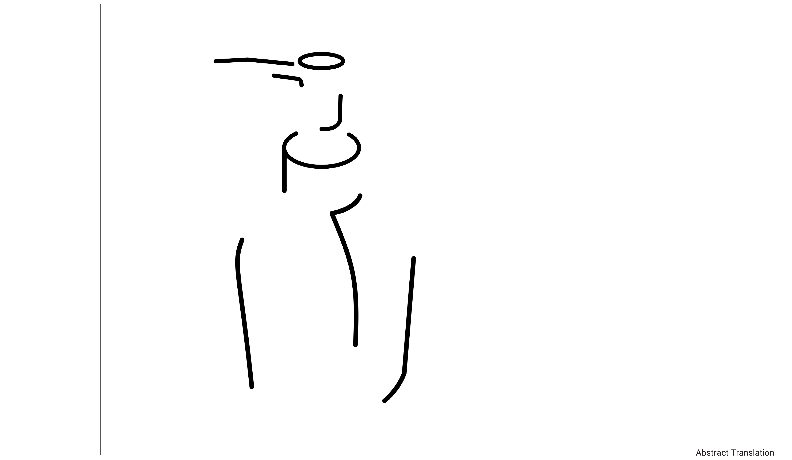
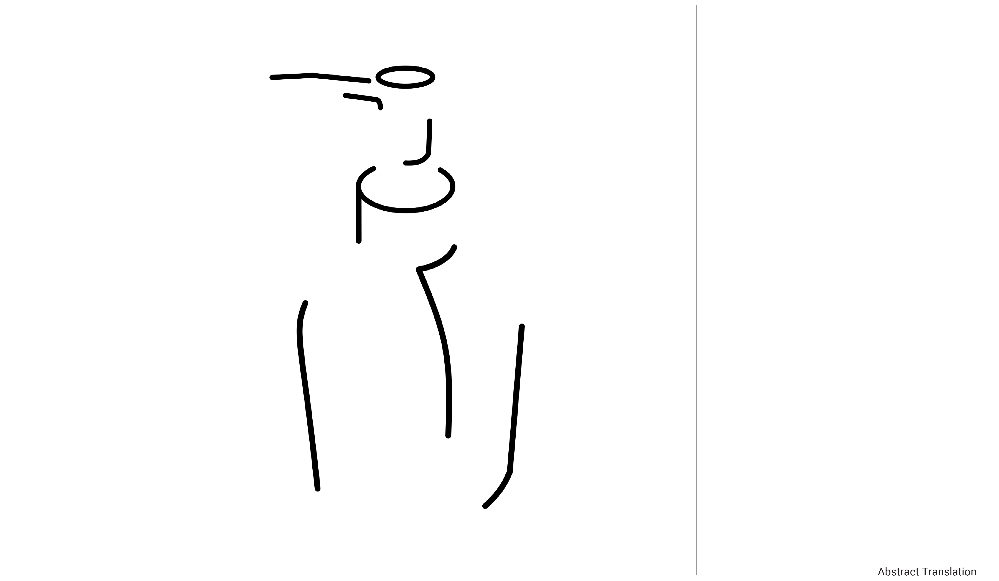
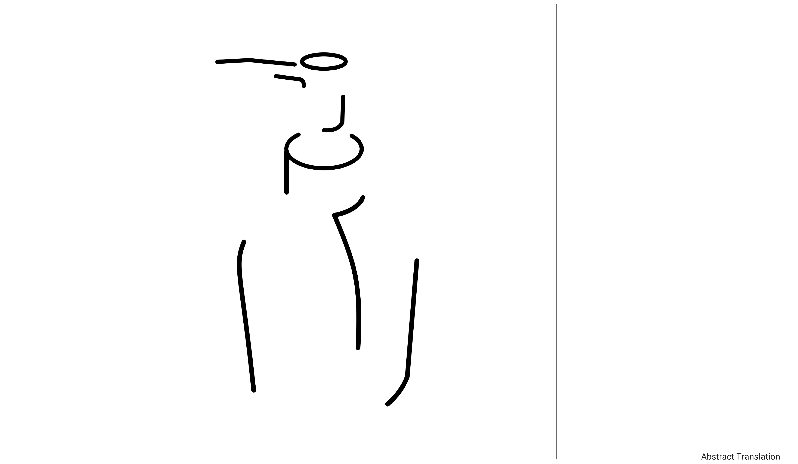

This is a study and translation of an ordinary object, such as the soap dispenser, that we see on a daily basis. Focusing on the two-dimensional interpretation of an object. The following processes develop a critical eye for expressing an object in several ways. This common soap dispenser was visualized using several approaches as it moves further in the design process. With each new interpretation, the strength of the image representation and the craftsmanship of the expression is scrutinized.
Initially the soap dispenser was analyze through capturing photos of its front view, profile view, top view, and three quarter view. To help identify its essential qualities, crude gestural sketches were created using compressed charcoal sticks. Through further observation more conscious moves toward controlled form-making were made by using Adobe Illustrator. Tracing the main elements and basic forms, an accurate representation of the object was created. Then, working with plaka and a brush, the essential from the nonessential were separated. Further reducing the form to its extreme essentials through abstract translations, this further led to the reduction of the soap dispenser into a simplified and identifiable visual icon.
